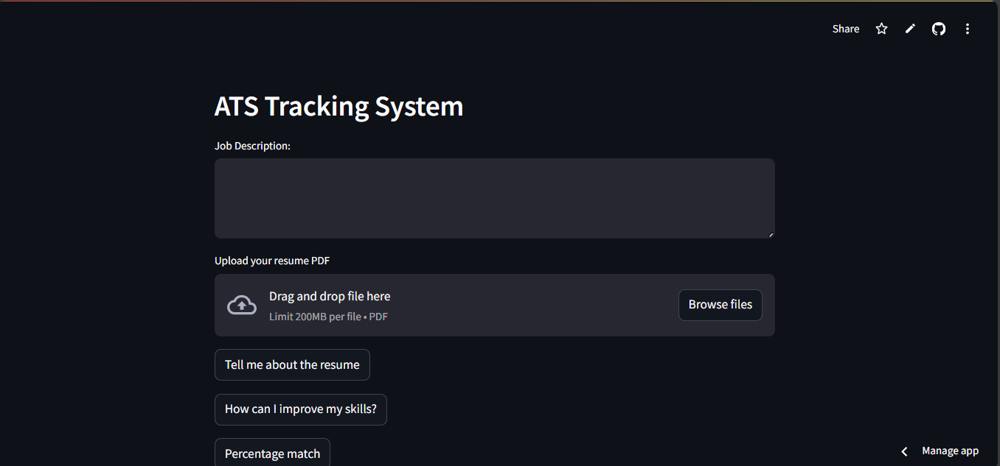
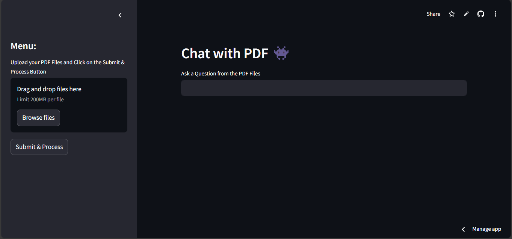

My Projects

Recipe Finder
The Recipe Finder app helps you discover recipes based on the ingredients you have. Just input your ingredients, and it suggests dishes you can make, making cooking simple and convenient.
View Project →
Mortgage Calculator
A frontend-based Mortgage Calculator that provides users with an easy-to-use interface to calculate their loan EMIs.
View Project →
ATS Resume Tracker
A Streamlit Project to analysis Resumes and provide meaningfull feedbacks. This project showcases LLMs and proper usage of Prompt
View Project →